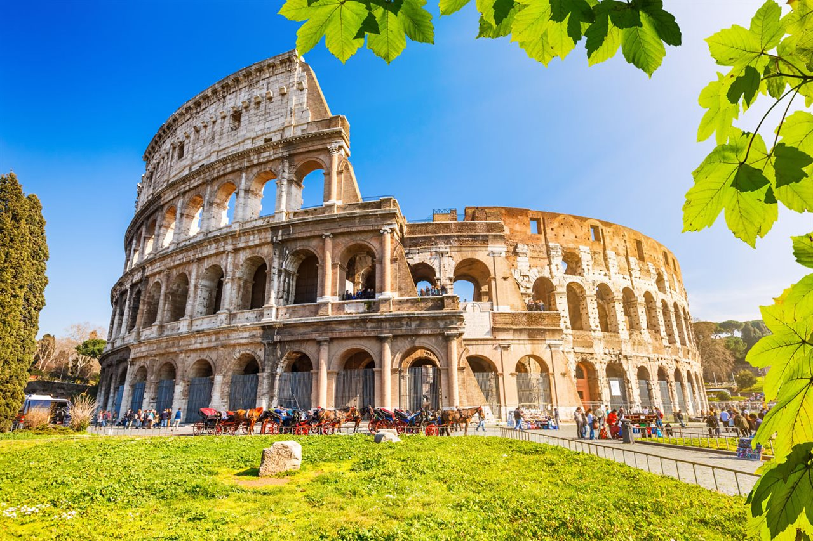
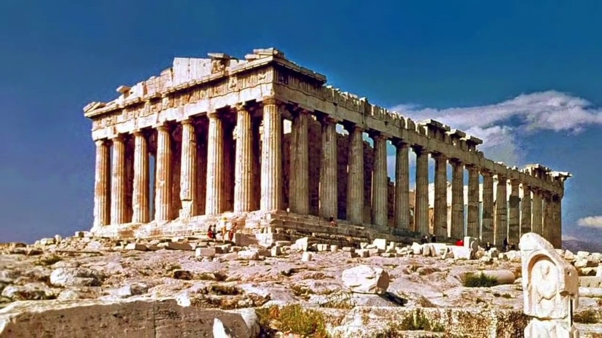

Italia, país europeo con una larga costa mediterránea. Su capital, Roma, es hogar del Vaticano, de ruinas antiguas y de obras de arte emblemáticas.

Uno de los tan famosos lugares más visitados es el Coliseo de Roma el cual es un impresionante anfiteatro construido en el siglo I en honor a la dinastía Flavia que era un grupo de emperadores que impulsó su construcción.
Grecia es un país del sureste de Europa con miles de islas en los mares Egeo y Jónico. Atenas, su capital, conserva monumentos emblemáticos, como la ciudadela de la Acrópolis del siglo V a. C. con el templo del Partenón. Grecia también es famosa por sus playas, desde las arenas negras de Santorini hasta los centros turísticos de eventos en Miconos.

Una zona turística de Grecia es la Acrópolis de Atenas, conocida como "la roca sagrada", es la joya de la Grecia clásica. Sus templos han maravillado al mundo durante siglos y han dejado constancia de la Edad de Oro de la capital ateniense (siglo V a.C.), cuando en ella confluían arte, riqueza y democracia.
Francia, en Europa Occidental, abarca ciudades medievales, villas alpinas y playas mediterráneas.

París, su capital, es famosa por sus firmas de alta costura, los museos de arte clásico, como el Louvre, y monumentos como la Torre Eiffel. El país también es reconocido por sus vinos y su gastronomía sofisticada. Los dibujos de la antigua cueva de Lascaux, el teatro romano de Lyon y el imponente Palacio de Versalles dan fe de su rica historia.